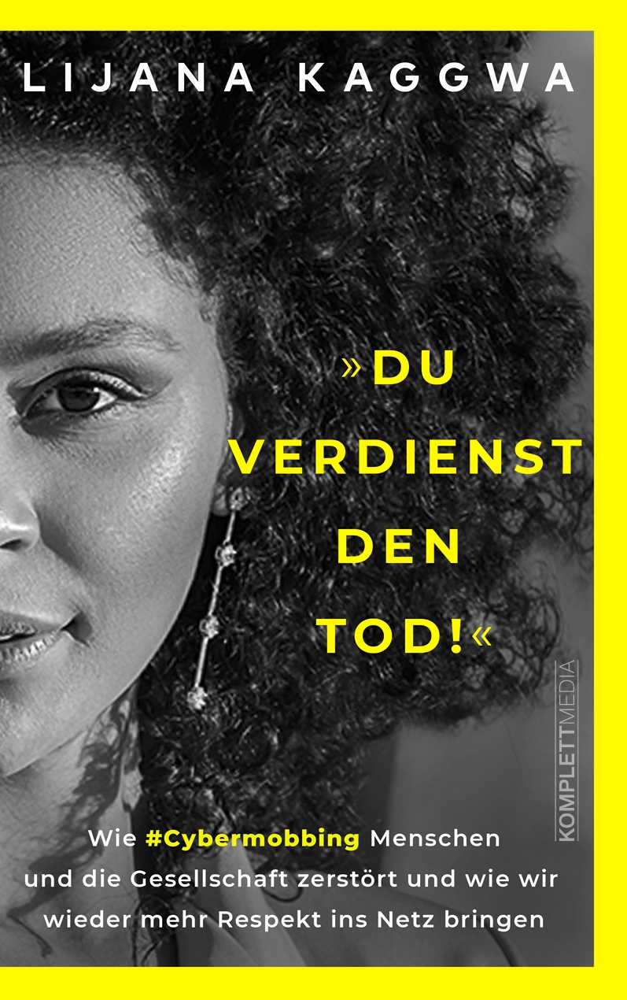

Du verdienst den Tod! Wie Cybermobbing Menschen und die
Gesellschaft zerstört und wie wir wieder mehr Respekt ins
Netz bringen
"Ich bin nur eine von Millionen", sagt
Lijana. In diesem Buch geht es also nicht nur um ein
Einzelschicksal, sondern um ein Massenphänomen. Der immer
weiterwachsende Hass im Netz ist zu einem Spiegelbild für
die Zerrissenheit unserer Gesellschaft geworden.
Diskussionen auf Social-Media-Kanälen arten oftmals in
Beschimpfungen, Beleidigungen und sogar Bedrohungen aus. Der
Suizid der österreichischen Ärztin Lisa-Maria Kellermayr in
diesem Sommer war ein trauriger Höhepunkt. Auch Lijana hat
bis heute mit den Folgen von Cybermobbing zu kämpfen. Durch
ihren immensen Mut und dank professioneller Hilfe, hat sie
es geschafft, sich zu rehabilitieren. Doch statt sich aus
der Öffentlichkeit zurückzuziehen, will sie kämpfen,
aufklären und verhindern, dass es anderen so ergeht wie ihr.
Lijana geht auf eine Interviewreise durch Deutschland und
redet mit Betroffenen, Prominenten und Nichtprominenten, mit
Psychologen, Polizisten sowie Experten zum Thema
"Cybermobbing". Dabei sammelt sie Stimmen und fachkundige
Aussagen, Informationen und Hintergründe. Sie will als
Cybermobbing-Expertin und Botschafterin für einen neuen
Umgang mit dem Thema "Kommunikation im Netz" werben.
Verwoben mit ihrer persönlichen Geschichte kommen all diese
Stimmen im Buch zu Wort. Eines wird dabei schnell klar:
Schweigen ist keine Option. Für keinen von uns. Lasst uns
laut sein gegen Hass im Netz!
Lijana Kaggwa (25) gab ihr Mathestudium für eine
Modelkarriere auf. 2020 wurde sie durch die TV-Sendung GNTM
(Germany's Next Top Model) bekannt. Was als großer Traum
begann, mündete in einem Albtraum. Aus der Favoritin der
Sendung wurde eine Zielscheibe. Die damals 23-Jährige
Studentin wurde von einer Welle des Hasses im Netz
überrollt. Sie und ihre Familie (sogar ihr Hund) wurden im
realen Leben bedroht und wüst beschimpft. Sie stieg
schließlich freiwillig im GNTM-Finale vor einem
Millionenpublikum aus, um ein Zeichen gegen Cybermobbing zu
setzten. Danach gründete sie ihren Verein "Love always
wins". Die Mindset-Influencerin lebt in Kassel und kommt aus
einer Patchwork-Familie mit vier Geschwistern. Was Lijana
besonders betroffen macht: Ein großer Teil der Anfeindungen
im Netz sind rassistischer Natur.